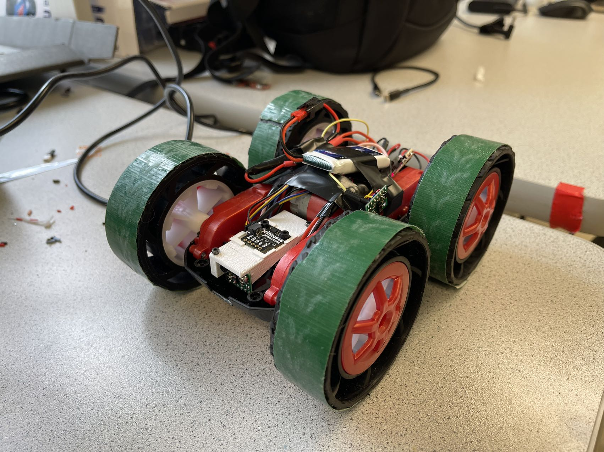
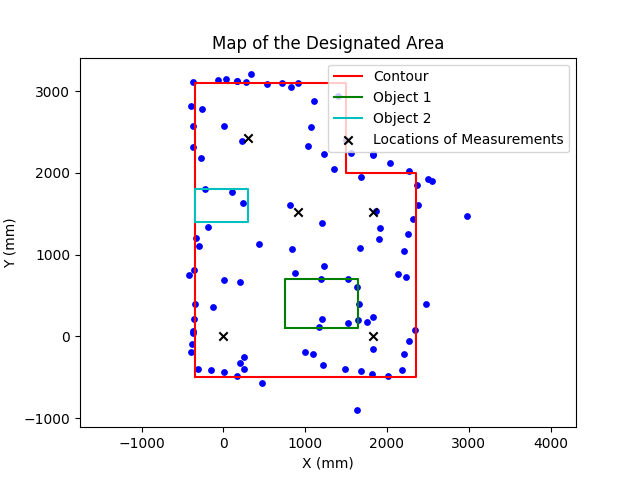

Objectives
Lab 9 requires the robot to rotate in place and collect ToF readings with corresponding yaw angles. With those data, we can create a point based 2D map of the experiment environment. Finally, the point clusters should be converted to a line based map consisted of start and end points of each line segment for future use.
Orientational PID Control
To reduce the friction, I attached tapes to the rims of the wheels. The tapes in practice help the car to make turns smoothly.

The PID parameters for rotational control are retuned for faster convergence (\( K_p = 14.00, K_i = 7.50, K_d = 0.80 \)), with wind-up protection at \( E_i = 400 deg \).
We can use the following code to control the robot to do periodical turning via BLE.
MAP_data = np.array([])
numSamples = 20
interval = 400 / numSamples
ble.send_command(CMD.PID_ROT_ON, "")
for i in range(numSamples):
ble.send_command(CMD.SET_TARGET_YAW, str(interval*i))
time.sleep(1.5)
ble.send_command(CMD.GET_DS, "")
s = ble.receive_string(ble.uuid['RX_STRING'])
MAP_data = np.append(MAP_data, s.split())
print(s)
ble.send_command(CMD.PID_ROT_OFF, "")
print(MAP_data)
The PID controller will converge within 1.5 seconds, so the car is set to take a 20 degree turn in every 1.5 seconds. The car turning at the designated spots are shown in
the videos below.
Merge and Plot the Readings
We can use the following equations for converting the polar coordinates into Cartesian coordinates.
\( x = \rho\times \cos(\psi)\)
\(y = \rho\times \sin(\psi) \)
Using the following code, we can draw the contours along with the original point measurements, and save the map's vertices into csv files.
plt.figure()
plt.axis('equal')
plt.scatter(ds2Map1[:, 0], ds2Map1[:, 1], color = 'b', s = 15)
plt.scatter(ds2Map2[:, 0] + 304*6, ds2Map2[:, 1], color = 'b', s = 15)
plt.scatter(ds2Map3[:, 0] + 304*6, ds2Map3[:, 1] + 304*5, color = 'b', s = 15)
plt.scatter(ds2Map4[:, 0] + 304*3, ds2Map4[:, 1] + 304*5, color = 'b', s = 15)
plt.scatter(ds2Map5[:, 0] + 304, ds2Map5[:, 1] + 304*8, color = 'b', s = 15)
# plot the contour lines.
vertices = np.array([[-350, -500], [2350, -500], [2350, 2000], [1500, 2000], [1500, 3100], [-350, 3100], [-350, -500]])
np.savetxt("vertices.csv", vertices, delimiter = ',')
object1 = np.array([[750, 100], [1650, 100], [1650, 700], [750, 700], [750, 100]])
np.savetxt("object1.csv", object1, delimiter = ',')
object2 = np.array([[-350, 1400], [300, 1400], [300, 1800], [-350, 1800], [-350, 1400]])
np.savetxt("object2.csv", object2, delimiter = ',')
locations = np.array([[0, 0], [304*6, 0], [304*6, 304*5], [304*3, 304*5], [304, 304*8]])
np.savetxt("locations.csv", locations, delimiter = ',')
plt.plot(vertices[:, 0], vertices[:, 1], color = 'r', label = "Contour")
plt.plot(object1[:, 0], object1[:, 1], color = 'g', label = "Object 1")
plt.plot(object2[:, 0], object2[:, 1], color = 'c', label = "Object 2")
plt.scatter(locations[:, 0], locations[:, 1], marker = "x", color = "k", label = "Locations of Measurements")
plt.title("Map of the Designated Area")
plt.legend()
plt.xlabel("X (mm)")
plt.ylabel("Y (mm)")
plt.savefig("Mapping2_2.png")
plt.show()
The polar plot of the readings at the upper-left spot is shown below.

The map obtained is shown below.

Obtain Line-based Map
In the previous step, we have obtained the vertices of the map contour and objects within the setting. We can draw the line-based map below using these vertices:
vertices = np.array([[-350, -500], [2350, -500], [2350, 2000], [1500, 2000], [1500, 3100], [-350, 3100], [-350, -500]])
np.savetxt("vertices.csv", vertices, delimiter = ',')
object1 = np.array([[750, 100], [1650, 100], [1650, 700], [750, 700], [750, 100]])
np.savetxt("object1.csv", object1, delimiter = ',')
object2 = np.array([[-350, 1400], [300, 1400], [300, 1800], [-350, 1800], [-350, 1400]])
np.savetxt("object2.csv", object2, delimiter = ',')
locations = np.array([[0, 0], [304*6, 0], [304*6, 304*5], [304*3, 304*5], [304, 304*8]])
np.savetxt("locations.csv", locations, delimiter = ',')
The line-based map is shown below.

THE END